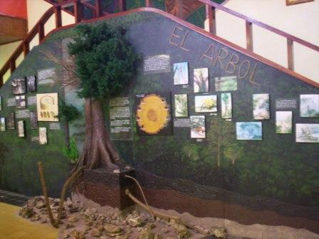
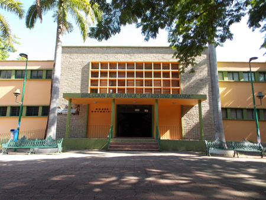
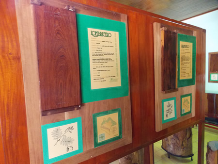
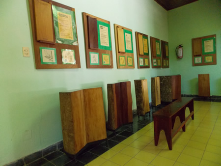
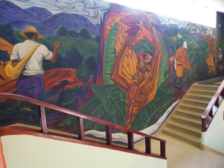

El Museo Botánico, localizado en el corazón de la capital del Estado, es una parte importante del patrimonio histórico y cultural de la región, inaugurado en 1951 junto con su principal exposición de maderas.
En su interior resguarda, desde hace 60 años, colecciones que nos muestran parte de la riqueza vegetal de Chiapas. El edificio que aloja a este Museo representa la arquitectura de los años cincuenta. El museo fue conocido por mucho tiempo como “El Museo de las Maderas” debido en que su interior tiene exposiciones permanentes de maderas de Chiapas. En ella se exhiben 46 especies maderables, con troncos de un metro de alto y cortes tangenciales, en donde se observa la corteza y la veta de la madera, así como algunas otras características.En el vestíbulo principal se puede apreciar el mural creado en 1952 por el pintor chiapaneco Héctor Ventura, en el que se representa la explotación de los recursos vegetales más sobresalientes de la época. Esta obra está considerada dentro del catálogo de los murales mexicanos.El Museo Botánico es un centro importante de difusión del conocimiento científico de los recursos vegetales en general y de la flora chiapaneca en particular
Fracc. Parque Madero Calz. De los Hombres Ilustres de la Revolución Mexicana s/n Centro. CP 29000, Tuxtla Gutiérrez, Chiapas.
Contacto:
Tel: (961) 612-3622
Fax: (961) 612-9943
Email: museobotanico@ihn.chiapas.gob.mx
Email: museobotanica@hotmail.com
Del parque central, continuar por la calle central norte, después girar a la derecha e incorporarse a la 5ª av. Norte oriente, hacer un recorrido de aprox. A 600 mts para después girar ligeramente a la derecha hacia la calzada de Los Hombres Ilustres, el portal al jardín se encuentra dentro de ésta área verde y puede identificarse bajo el nombre “Dirección de Botánica "Dr. Faustino Miranda"”.
Cuentan con Biblioteca especializada en Botánica y exposiciones temporales, servicios como: Visitas guiadas, Conferencias, Concursos de arte, Piezas interactivas, Servicios educativos: cursos de verano para niños de primaria, en los que trabajan con diversas plantas, semillas, flores, Sala de proyecciones





posicione el mouse sobre las imágenes